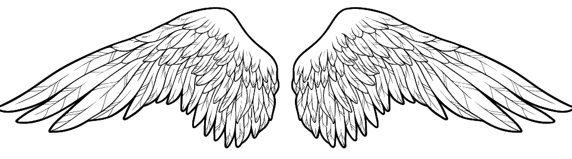

Голос поколения — честные тексты, гитары, биты
Характеризуется мрачными, депрессивными текстами, исповедальной манерой исполнения и использованием гитарных сэмплов из поп-панка и эмо-рока. Часто сочетает рэп-читку с мелодичным вокалом (пост-панк/инди-влияния).
Жанр зародился в середине 2010-х на платформе SoundCloud, став голосом нового потерянного поколения. Пионерами стали исполнители, которые выросли на эмо-музыке 2000-х (My Chemical Romance, Underoath) и наложили эту эстетику на трэп-биты. Трагическая смерть ключевых фигур (Lil Peep, XXXTentacion) только укрепила мифологию жанра.
Эмо-реп разрушил табу на мужские слёзы в рэп-культуре. Тексты о депрессии, одиночестве, любовной боли и психическом здоровье нашли отклик у миллионов. Автотюн здесь не скрывает эмоции, а наоборот — подчёркивает уязвимость.